4entreprises étudiées
45 %de taux de transformation visé chez IKEA
3objectifs SMART définis
36mois de feuille de route
Le contexte et la commande
- SAE S5.02 : comprendre comment un manager organise, encadre et pilote efficacement une équipe, à travers quatre cas d’entreprise distincts.
- Quatre terrains différents : le secteur immobilier, Decathlon, IKEA et Maison Le Minor.
- Chaque cas appelle un angle propre — environnement concurrentiel, modèle économique et leadership, redressement de performance, développement international.
La problématique
Comprendre comment un manager organise, encadre et pilote efficacement une équipe, à travers quatre contextes organisationnels différents.
1 — Le secteur immobilier
- Analyse de l’environnement concurrentiel par les cinq forces de Porter.
- Le secteur se caractérise par une concurrence très forte et un pouvoir de négociation élevé des clients, du fait de l’accès facilité à l’information et des plateformes numériques.
- Étude de la demande et segmentation selon des critères géographiques, sociologiques, psychographiques et comportementaux.
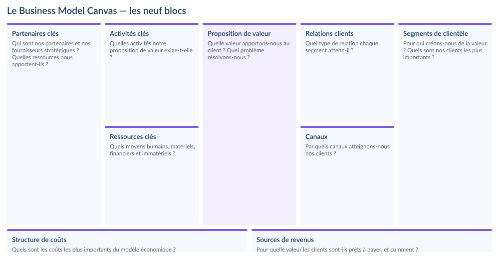
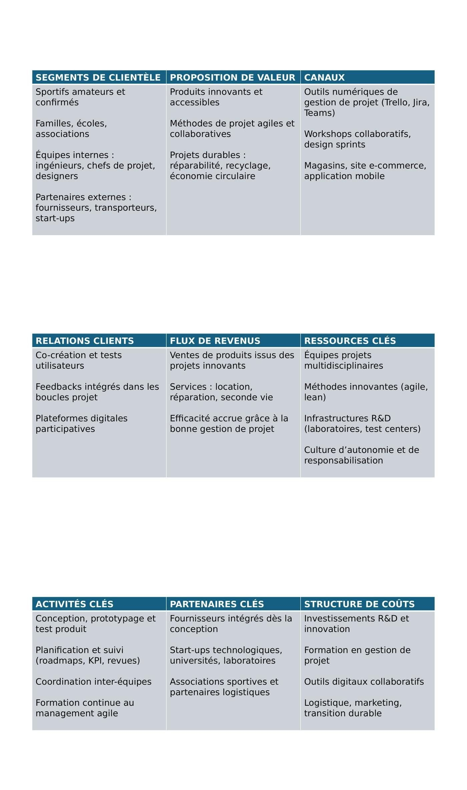
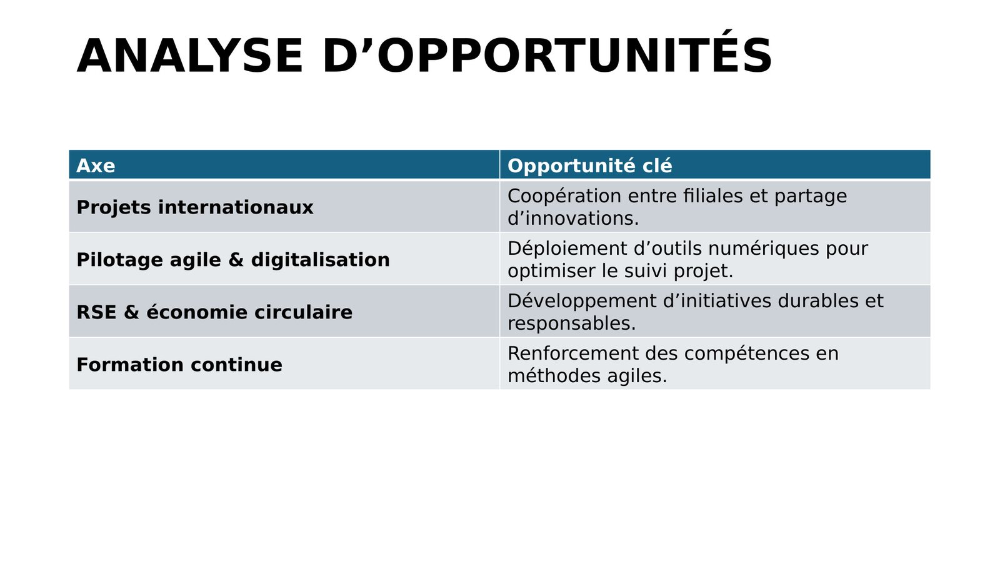
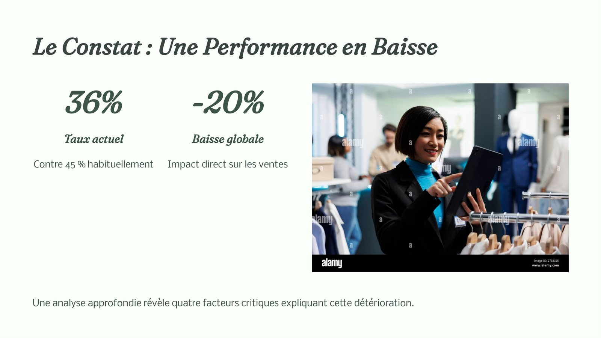
2 — Decathlon
- Business Model Canvas appliqué au management de projet, orienté matériel de sport.
- Jeu de rôles sur les styles de leadership : autoritaire, participatif, transformationnel, transactionnel et servant.
- Le rôle du manager consiste à adapter son style au contexte, aux objectifs et aux profils.
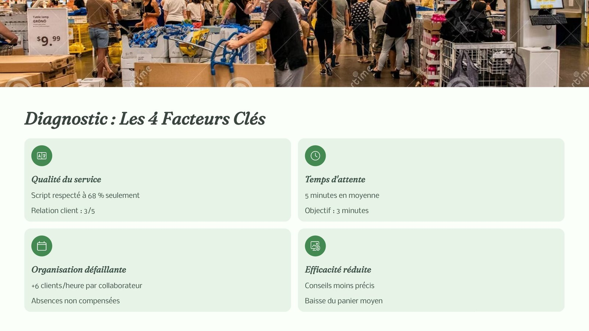
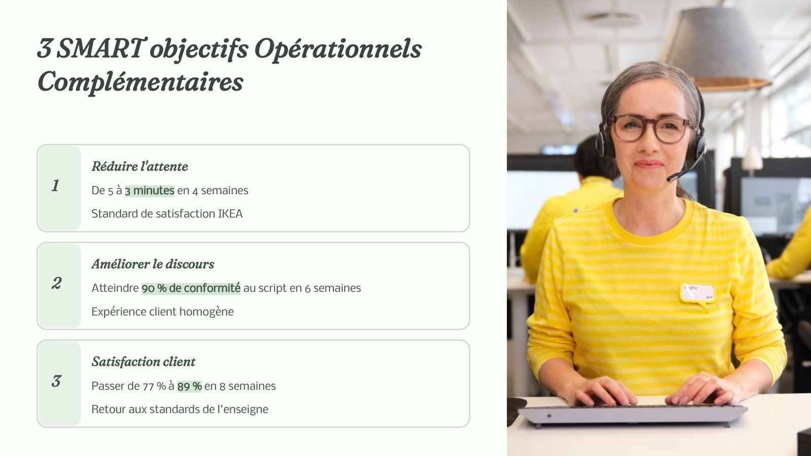
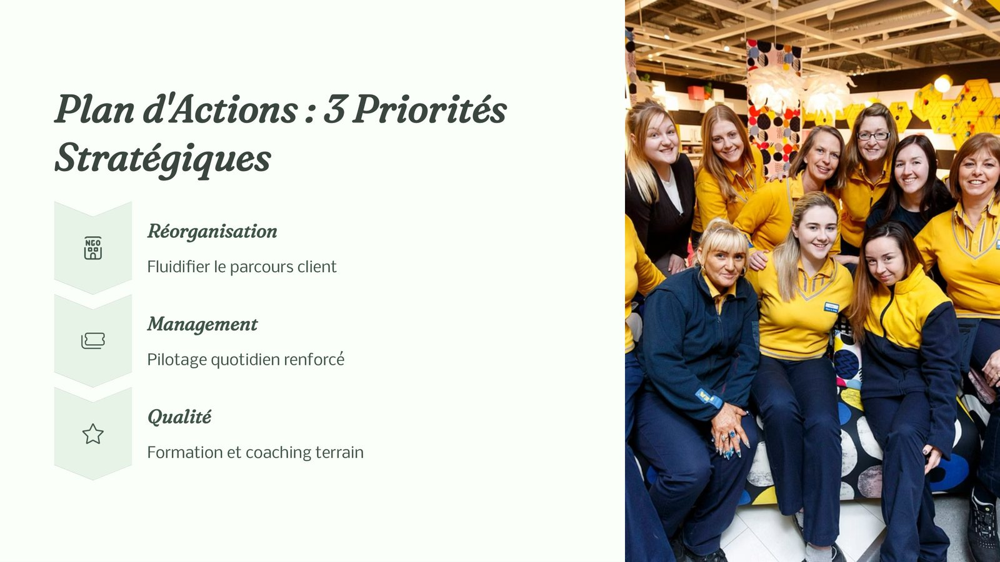
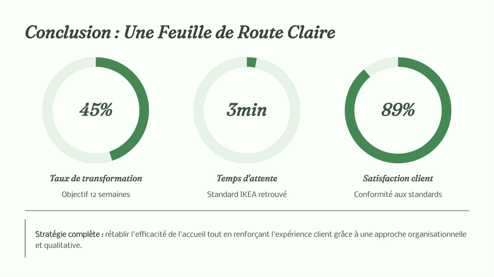
3 — IKEA
- Un point d’accueil affichait 36 % de taux de transformation contre 45 % habituellement, pour une baisse globale des ventes de 20 %.
- Diagnostic en quatre facteurs : qualité du service, temps d’attente, organisation défaillante et efficacité réduite.
- Plan d’actions en trois priorités et objectifs SMART : retour à 45 % de transformation en 12 semaines, 3 minutes d’attente et 89 % de satisfaction client.
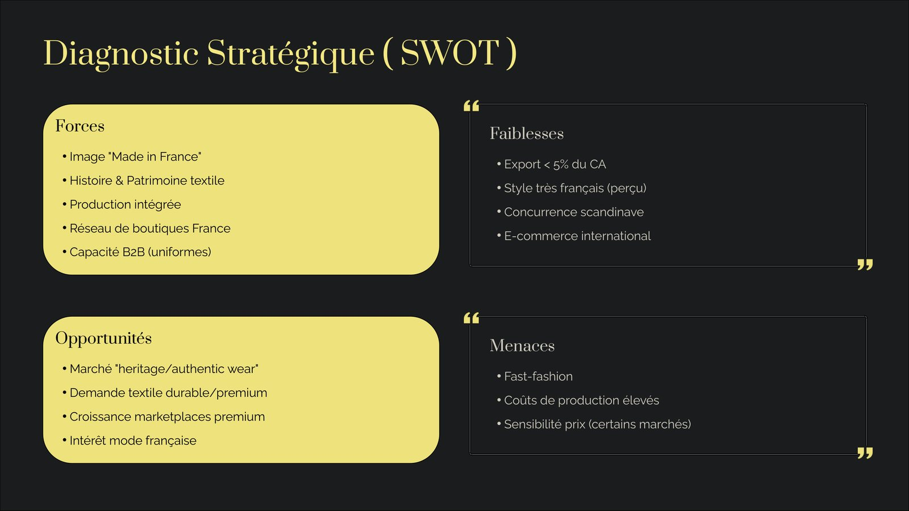
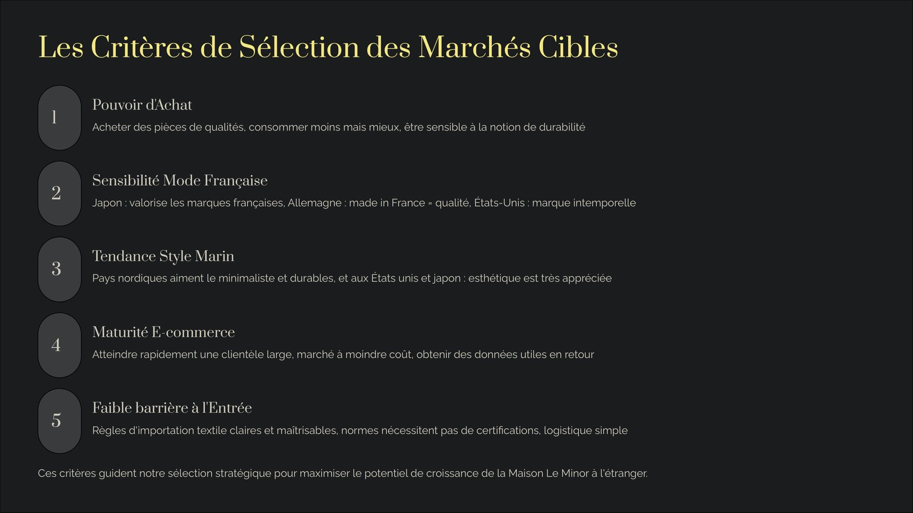
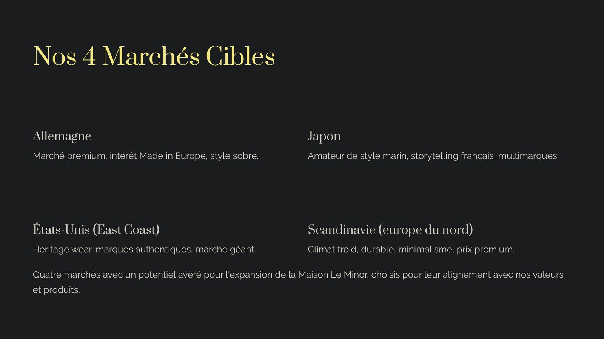
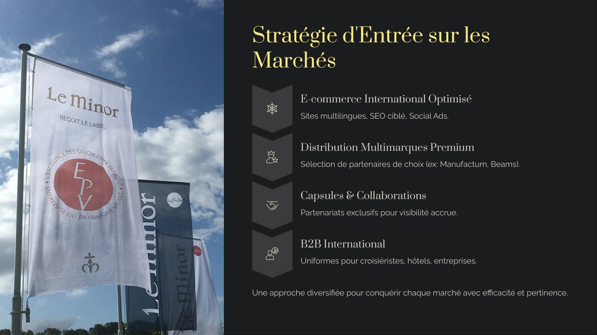
4 — Maison Le Minor
- Développement international d’une manufacture textile bretonne créée en 1936.
- Grille de sélection en cinq critères : pouvoir d’achat, sensibilité au Made in France, tendance style marin, maturité du e-commerce et faiblesse des barrières à l’entrée.
- Quatre marchés retenus : Allemagne, Japon, États-Unis côte Est et pays scandinaves.
- Stratégie d’entrée : e-commerce international, distribution multimarques premium, capsules et collaborations, B2B international.
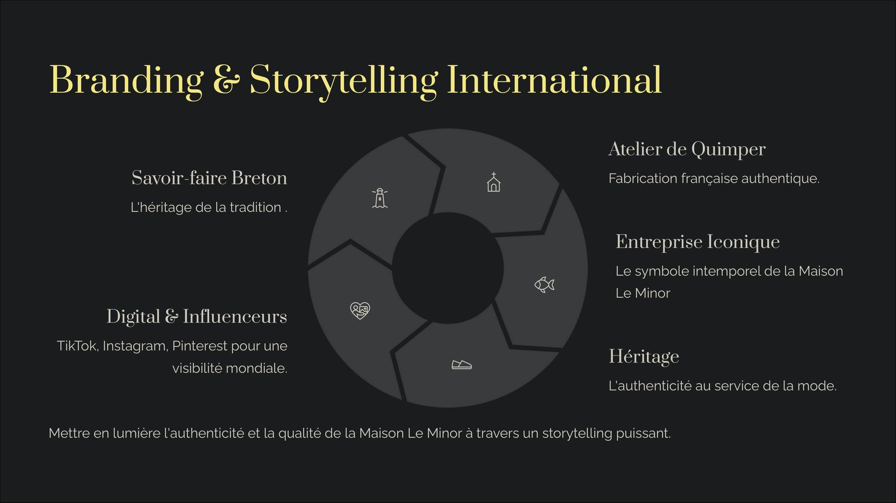
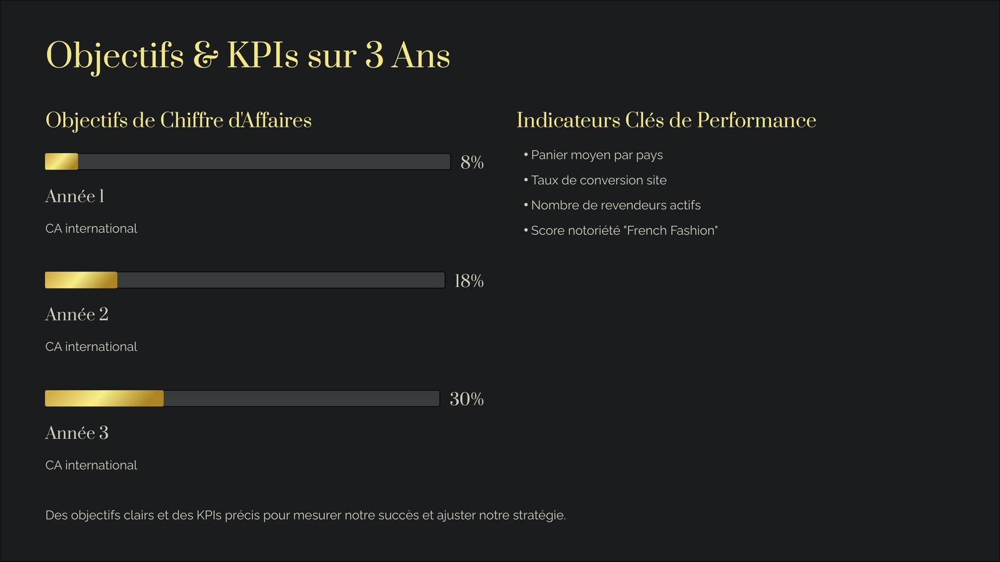
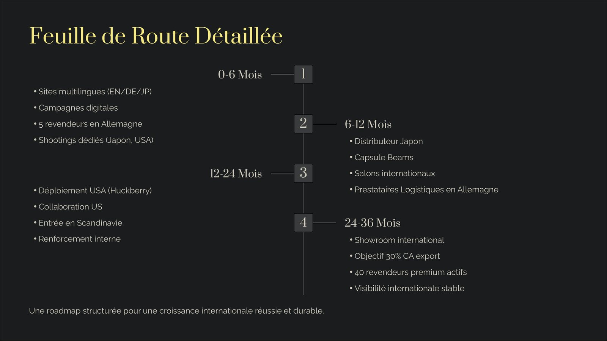
Ce que j’ai produit
- Immobilier : analyse de l’environnement concurrentiel et des forces qui structurent le marché.
- Decathlon : Business Model Canvas appliqué au management de projet et analyse d’opportunités — international, pilotage agile, RSE et économie circulaire, formation continue.
- IKEA : diagnostic en quatre facteurs d’une baisse de performance, trois objectifs SMART et un plan d’actions en trois priorités, avec une feuille de route chiffrée à douze semaines.
- Maison Le Minor : diagnostic stratégique, cinq critères de sélection des marchés, quatre marchés cibles retenus, modes d’entrée, stratégie de branding et KPI sur trois ans.
Ce que j’en retire
- Le style de management se choisit selon le contexte, les objectifs et les profils en présence.
- Un plan d’actions n’a de valeur que s’il est assorti d’objectifs mesurables et de délais.
- Comparer quatre entreprises apprend à transposer une méthode d’un secteur à un autre.
Outils et méthodes mobilisés
Business Model CanvasObjectifs SMARTKPIDiagnostic de performanceStyles de leadership